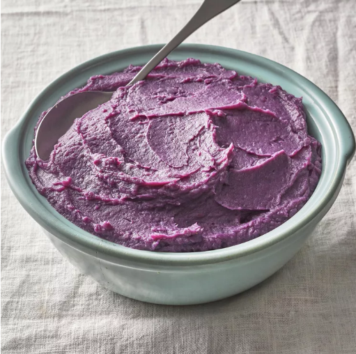

Purple Mashed Potatoes
Home

Delicious purple mashed potatoes flavored with coconut and lime
- 3 medium purple sweet potatoes, or more to taste
- 1 cup coconut milk
- 1 lime, juiced
- salt and ground black pepper to taste
- Preheat the oven to 375 degrees F (190 degrees C).
- Poke holes all over potatoes with a fork. Arrange in a baking dish.
- Bake in the preheated oven until purple potatoes are easily pierced with a knife, about 45 minutes.
- Cut purple potatoes in half, widthwise, on a cutting board. Scoop flesh into a mixing bowl. Add coconut milk, lime juice, salt, and pepper to taste. Beat with an electric mixer until smooth.